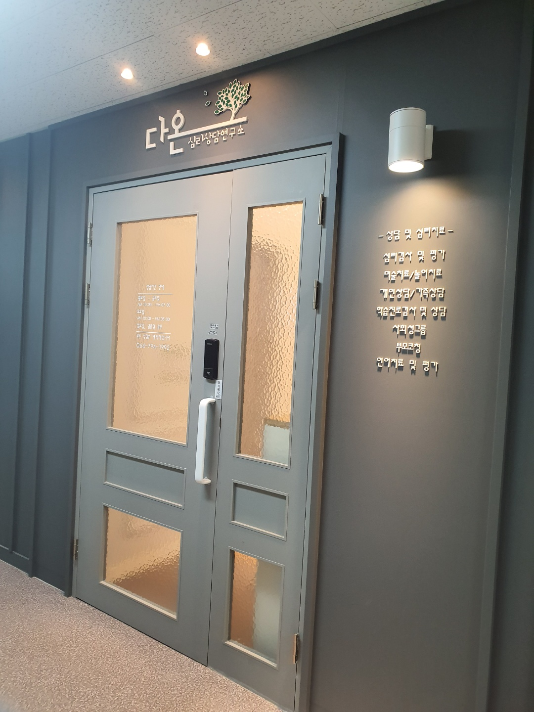
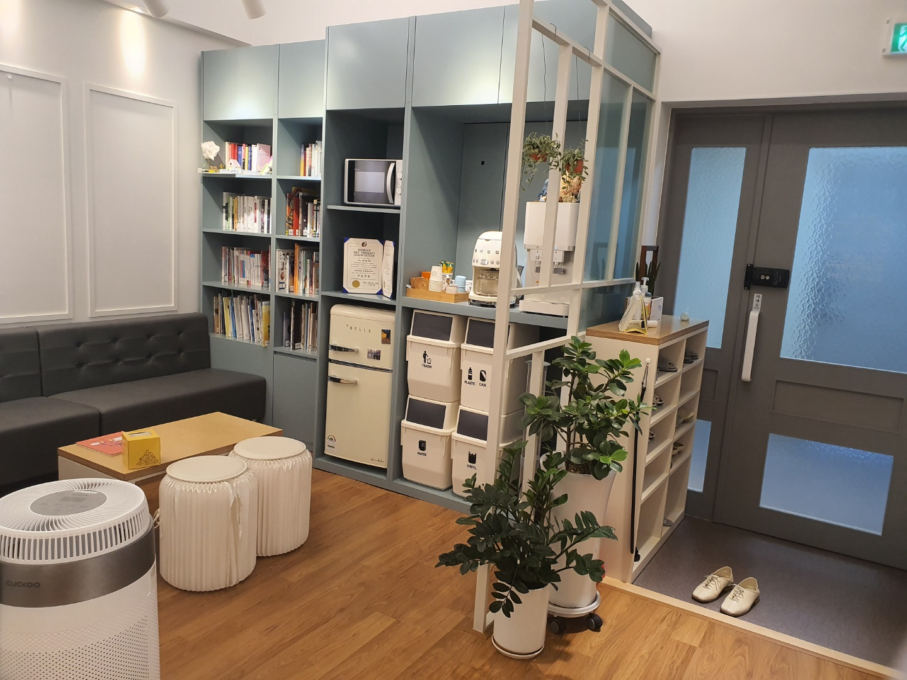
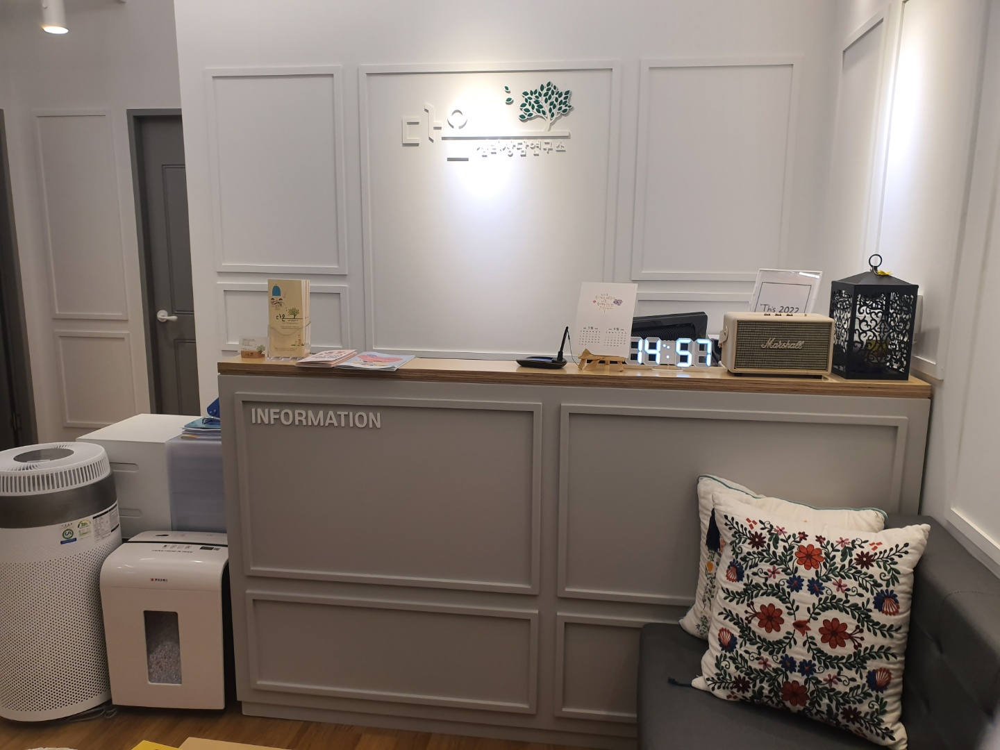
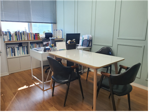
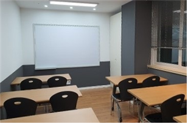
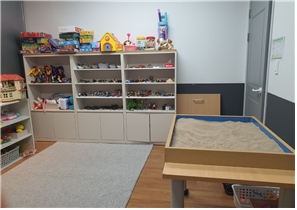
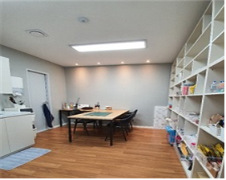
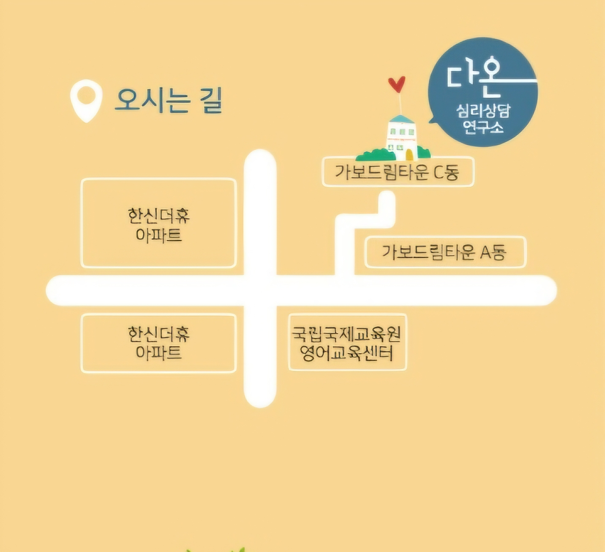

다온 심리상담연구소
당신 안의 긍정의 에너지가 좋은 일을 만듭니다.
다온심리상담연구소는 임상 경험이 풍부한 전문상담사들이 함께합니다.
'모든 좋은 일이 온다'는 다온의 이름처럼, 저희는 당신 내면의 긍정적인 힘과 가능성을 믿습니다.
마음의 깊은 결을 들여다보는 개인상담, 서로의 연결을 돕는 가족상담, 그리고 언어로 다 담지 못하는 무의식과 감정을 치유하는 매체상담을 통해 체계적이고 전문적인 심리서비스를 제공합니다.
내 삶에 찾아올 모든 좋은 변화, 다온이 따뜻하고 전문적인 동행으로 함께하겠습니다.
다온이 상담을 설계하는 방식
01
다섯 명의 상담사 모두 정기 사례발표와 슈퍼비전을 거쳐 상담 방향을 점검합니다.
02
표현예술치료와 애착·인간중심 이론을 바탕으로 상담과 미술치료를 함께 설계합니다.
03
상담심리학 연구와 임상 경험을 함께 쌓아온 원장이 상담 방향을 책임집니다.
04
내담자의 속도를 존중하는 상담실과 대기 공간을 마련했습니다.
상담 프로그램
현재 상태를 정확히 이해하는 것에서 시작합니다.
말로 다 담기 어려운 마음을 표현하도록 돕습니다.
혼자, 또는 가족과 함께 관계를 다시 살펴봅니다.
아이와 청소년의 강점과 방향을 함께 찾습니다.
또래 관계 안에서 안전하게 연습하는 시간입니다.
부모의 태도와 대화 방식을 함께 점검합니다.
언어발달을 세심하게 살피고 지원합니다.
다온의 상담사
소장 · 상담교육 및 미술치료
놀이치료 · 미술치료
청소년 · 부부가족상담
음악놀이치료 · 집단상담
언어치료 · 난독전문
공간 둘러보기








오시는 길
주소[주소를 입력해주세요]
전화064-794-1992
진료월~금 AM 10:00–PM 07:00 · 토요일 AM 10:00–PM 05:00
휴무일요일, 공휴일
지도 앱에서 길찾기 →